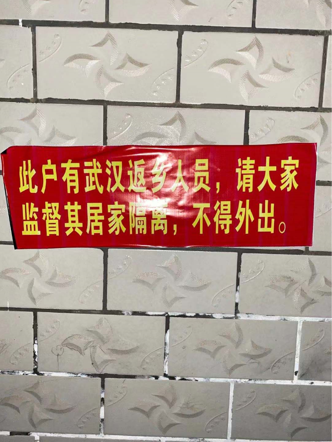
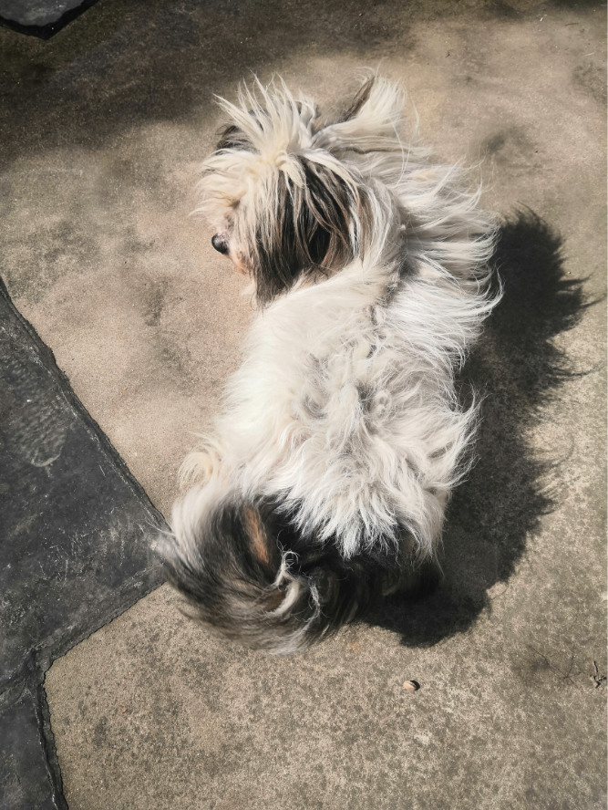
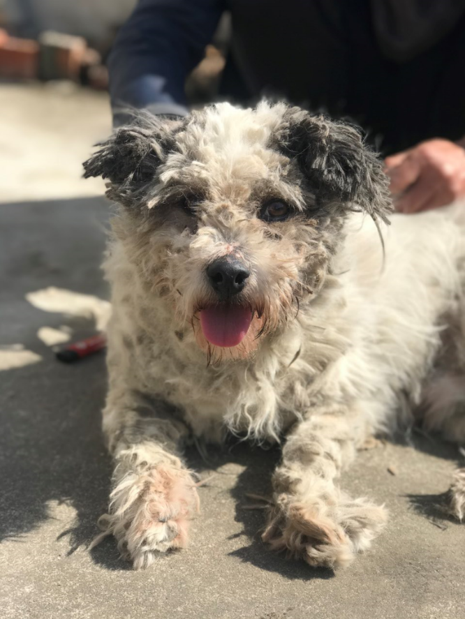
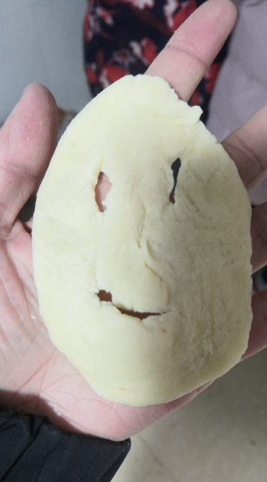
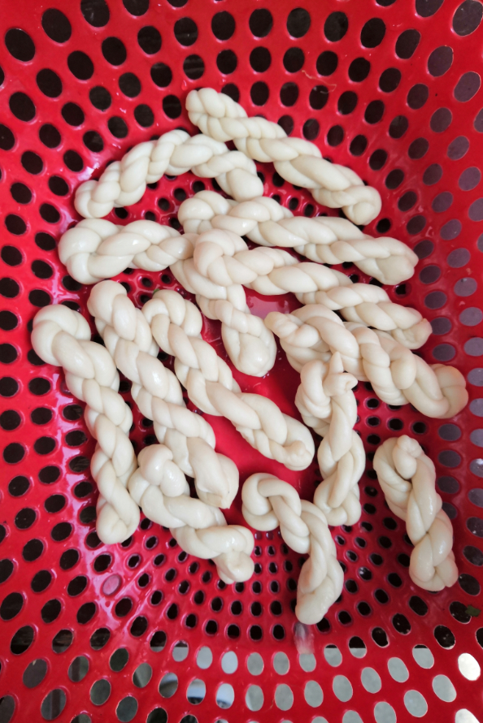
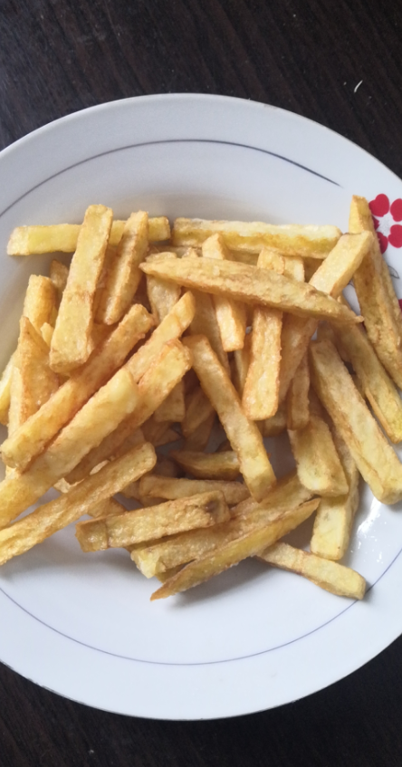
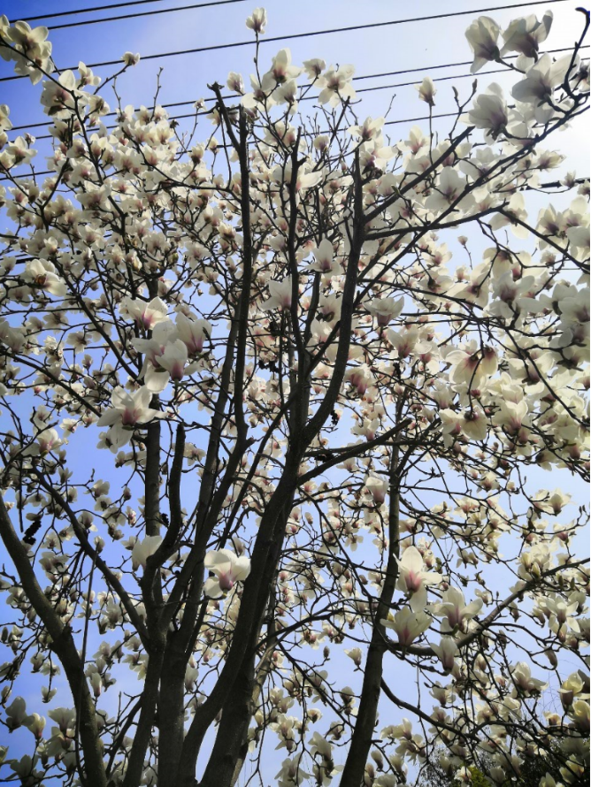
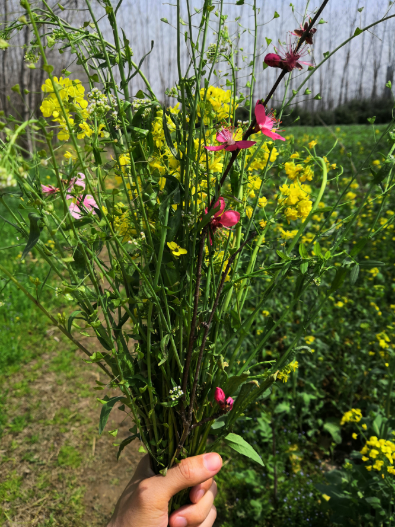
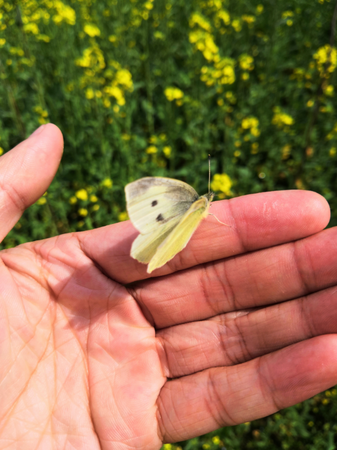

疫情期间的居家生活
回家
在某些人眼里，我是从武汉“逃”回来的。他们的理由很简单：“武汉的情况都那么严重了，你还要离开武汉，你就不怕把病毒带到其他地方？传染给其他人？一点责任感都没有。为了你的家乡、你的家人，你就应该待在武汉，这样对你对别人都好。”这话放在平时没什么错。但年关将至，身在异乡迫切回家团圆的心情谁能理解？在我看来在规定时间内（武汉封城前，1月23日前）从疫区（这里指的武汉）出来的人，应该清楚的明白自身承担的责任，那就是主动隔离，并且配合政府检查，主动上报自身情况。对那些从武汉回来还抱着侥幸心理，不告知政府，到处串门的人，他们才是真正逃回来的人。要说这次疫情发展的这么严重，“春运”只是导火线，不重视、不关心才是根本原因。
我是在武汉封城的前一天回家的，也就是1月22日。当时武汉大街上已经人人皆口罩了，进车站前还做了简单的体温检测。一路上都没敢懈怠，不敢取下口罩，不敢喝一口水，也不敢跟陌生人讲一句话。
大概2-3小时就到家了（家在湖北省境内）。在家，我也没敢取下口罩（除了睡觉取下来）。一边从网上了解最新疫情，一边给家人做着思想工作，给他们灌输“疫情有多可怕”的思想，希望身边的人都能重视起来，减少接触。当时我这个小乡镇也时有传出有人感染被隔离的消息，并且乡镇、村政府开始封路，每家每户都拉了隔离带，严禁出门。我家还被贴了告示。见下图：

自我隔离
当时终南山团队最新研究进展称病毒潜伏期一般情况下为1-14天。并且患者可能无症状，并能传染给其他人。于是我成了这个家的危险源。开始了自主隔离的生活。每天的活动地点是不超过15平米的房间。平时不戴口罩的父母，连睡觉都戴着口罩😂。
居家生活
挺过了隔离期，来到了第十五天。身体无恙，天气也转好。上天台晒太阳、玩手机、跟邻居隔楼聊天、还有逗狗。
🌞晒夕阳
🐶给狗剪毛 （前与后），虽然剪的丑🙃


⛄今天下雪了，堆雪人
🍪去厨房折腾
油炸饼（前与后）

水煎包（前与后）
搓麻花

炸土豆条

解封了，出门踏青
已是春三月



疫情前后的观念变化
学会正确佩戴口罩
说来好笑，疫情前，我不会正确佩戴口罩，平时也没怎么戴过口罩。疫情后才发现，口罩的褶皱需要展开才行，并且需要洗净手才能佩戴。在这里我想说，任何东西都是学问，请认真对待，保持尊重！
戴口罩是负责任的表现
疫情期间，我经常看到有报道在国外“中国留学生因外出购餐戴口罩被殴打”之类的新闻。联想到自己过去也对戴一次性医用口罩的人“嗤之以鼻”，认为戴医用口罩就是身体不健康的体现。从小看到戴口罩最多的人是在医院里，于是造成了这种刻板印象。疫情发生后，全国各地随处可见戴口罩的人，甚至自己也不得不被迫戴上口罩来保证自己和他人安全。才明白戴口罩是为自己为别人负责的表现。而不应该受到歧视，反而更应该尊重。
胜利的迹象
目前，这场战疫已经有了胜利的迹象，武汉归零已经不远。
The End😀